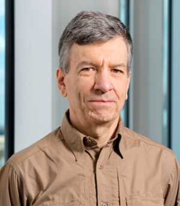
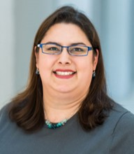
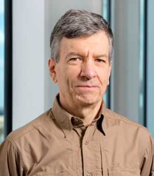
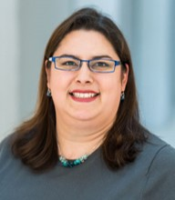

July 8 - July 10, 2019
11th International Workshop on Bio-Design Automation
Keynote Speakers: Prof. Luca Cardelli and Dr. Traci Haddock-Angelli
Detailed program and proceedings available
Vote on best poster and presentation here
About IWBDA
The Eleventh International Workshop on Bio-Design Automation
(IWBDA) will bring together researchers from the synthetic
biology, systems biology, and design automation communities to discuss
concepts, methodologies and software tools for the computational
analysis and synthesis of biological systems.
The field of synthetic biology, still in its early stages, has
largely been driven by experimental expertise, and much of its success
can be attributed to the skill of the researchers in specific domains
of biology. There has been a concerted effort to assemble repositories
of standardized components; however, creating and integrating
synthetic components remains an ad hoc process. Inspired by these
challenges, the field has seen a proliferation of efforts to create
computer-aided design tools addressing synthetic biology's specific
design needs, many drawing on prior expertise from the electronic
design automation (EDA) community.
The IWBDA offers a forum for cross-disciplinary discussion, with
the aim of seeding and fostering collaboration between the biological
and the design automation research communities.
IWBDA is organized by the
non-profit Bio-Design
Automation Consortium (BDAC). BDAC is an officially recognized
501(c)(3) tax exempt organization.
Topics of interest include:
- Design methodologies for synthetic biology.
- Standardization of biological components.
- Automated assembly techniques.
- Computer-aided modeling and abstraction techniques.
- Engineering methods inspired by biology.
- Domain specific languages for synthetic biology.
- Data exchange standards and models for synthetic biology.
Venue
IWBDA will take place in Cambridge, England.
Address
Department of Computer Science and Technology
William Gates Building
JJ Thomson Avenue
Cambridge. CB3 0FD
Directions
IWBDA Dinner on Tuesday is at:
The Anchor Pub (map)
Silver St
Cambridge
CB3 9EL
Sponsors
Design

Algorithm

Key Dates
- Abstract submission deadline:
May 10, 2019 May 17, 2019
- SBOL Workshop: July 8, 2019
- Workshop on Bio-Design for Portability (BD4P): July 8, 2019
- IWBDA: July 9-10, 2019
Workshops
SBOL Workshop
Date: Monday, July 8th 2019
Time: 09:00 - 17:30
Prior to IWBDA, there will be a one-day SBOL workshop on July 8th, 2019 at Cambridge University, UK. The workshop is aimed for both for software developers and SBOL users, and will include demos and tutorials. Although there is no registration fee for the SBOL workshop, participants should still register. For details, please visit this link.
Workshop on Bio-Design for Portability
Date: Monday, July 8th 2019
Time: 13:30 - 17:30
This workshop will address some of the challenges relevant for the portability of synthetic designs across species, and will give an overview of possible solutions being developed in a large EPSRC-funded project.
Registration
Scholarship applicants should wait until after they find out
about their scholarship to register
Please contact us with any registration questions.
SBOL Workshop Registration
Participants interested in attending the SBOL Workshop must register using this Google Form
Please contact us with any registration questions.
Workshop on Bio-Design for Portability Registration
Participants interested in attending the Workshop on Bio-Design for Portability must register using this Google Form
Please contact us with any registration questions.
Accommodations
There are several options for staying in Cambridge. We recommend using the following sites to find accommodations for IWBDA 2019.
Links:
- https://www.visitcambridge.org/accommodation/college-rooms
- https://www.universityrooms.com/en-GB/city/cambridge/home
Call for Papers
Call for papers : Link
Please submit all abstracts here https://www.easychair.org/conferences/?conf=iwbda19. If you do not have an easy chair account, please create one by following the instructions specified here.
Abstract Details:
- Abstracts should be two pages long and referenced. For your convenience, we have created a template for IWBDA Abstracts in Overleaf which can be found here. You can also download a sample pdf template here.
- While submitting your abstract for review, if you are using latex please use
\documentclass[sigchi, review]{acmart}
- If your abstract is accepted, please use
\documentclass[sigchi]{acmart}
- Inclusion of figures is encouraged.
- Please indicate whether you would like your abstract considered for a poster presentation, an oral presentation, or both.
- Include the full names, affiliations and contact information of all authors.
- Abstracts should be submitted in pdf format and should not exceed two pages.
Abstracts will be reviewed by the Program Committee. Those that are selected for oral and poster presentations will distributed to workshop participants and posted on the workshop website.
Special Issue
Submit your Research and Review Articles to the 2019 IWBDA Special Issue of ACS Synthetic Biology
Submission Deadline: January 30, 2020
ACS Synthetic Biology, led by world-renowned scientists, is the cutting-edge forum for publication for top research in the fields of synthetic and systems biology. We are actively seeking submissions for the 2019 International Workshop on Bio-Design Automation (IWBDA) Special Issue. If you have any questions, please contact the journal (eic@synthbiol.acs.org).
Editor in Chief
Christopher A. Voigt, Ph.D.
Massachusetts Institute of Technology
Author Benefits
- Fast publication
- Superior editorial standards
- No publication charges
- High impact factor
- Global exposure
- Open access options
Scholarships
IWBDA Scholarships are available for students, postdocs, and young
researchers.
Please see this PDF for details.
This year applications will be accepted via this Google form:
Scholarship Application Form
Allan Kuchinsky IWBDA Scholarship
This year IWBDA will be soliciting applications for the 5th annual
Allan
Kuchinsky Internation Workshop on Bio-Design Automation
Scholarship. Allan was a tremendous supporter of both synthetic
biology as well as design automation. His contributions to projects
such as Cytoscape and Eugene as well as numerous Agilent efforts was
crucial in helping academic and industrial researchers develop
state-of-the-art technologies and tools to lay the foundation for
this field. This scholarship in some small measure attempts to
recognize his tireless efforts by highlighting a student who shares
Allan's vision for the field. This scholarship will provide support
for one recipient to attend IWBDA (registration, airfare, hotel, and
small travel stipend) along with a recognized poster presentation
slot. Interested individuals should provide the following:
IWBDA abstract, resume/CV, essay, and recommendation letter.
For details, including how to apply, please see this PDF.
The Allan Kuchinsky scholarship is generously sponsored by Agilent.
Keynote Speakers
Luca Cardelli

Prof. Luca Cardelli is a Royal Society Research Professor at the University of Oxford since 2013. He has an M.Sc. in computer science from the University of Pisa, and a Ph.D. in computer science from the University of Edinburgh. He worked in the USA at Bell Labs, Murray Hill, from 1982 to 1985, and at Digital Equipment Corporation, Systems Research Center in Palo Alto, from 1985 to 1997, and at Microsoft Research, in Cambridge UK from 1997 to 2018 where he was head of the Programming Principles and Tools and Security groups until 2012.
His main interests are in programming languages and concurrency, and more recently in programmable biology and nanotechnology. He is a Fellow of the Royal Society, a Fellow of the Association for Computing Machinery, an Elected Member of the Academia Europaea, and an Elected Member of the Association Internationale pour les Technologies Objets.
Traci Haddock-Angelli

Dr. Traci Haddock-Angelli earned her doctorate in marine microbiology from the University of Rhode Island in 2010. She then joined the CIDAR lab under the guidance of Prof. Douglas Densmore at Boston University as a postdoctoral researcher in synthetic biology and later served as the Executive Director of the Center of Synthetic Biology. During her time at Boston University, Traci mentored over 40 undergraduate and graduate students and also ran the university’s iGEM team for four years. Traci joined the iGEM Foundation in the spring of 2015 as a Science and Technology Fellow, was later promoted to the Director of Technology, and now serves as the Director of the Competition. In this role, Traci oversees all aspects of the iGEM Competition and works to ensure that every team from around the world has a successful and fulfilling iGEM experience.
Organizing Committee
Contact us at: iwbda-exec AT lists.bio-design-automation.org
- Co-General Chair - Pietro Lio', University of Cambridge
- Co-General Chair - Anil Wipat, Newcastle University
- Co-General Chair - Jim Haseloff, University of Cambridge
- Co-General Chair - Andrew Phillips, Microsoft Research
- Co-General Chair - Sara-Jane Dunn, Microsoft Research
- Co-Local Chair - Alexandra Ting, University of Cambridge
- Co-Local Chair - Helena Andres Terre, University of Cambridge
- Co-Local Chair - Zuliani Paolo, Newcastle Cambridge
- Program Committee Chair - Prashant Vaidyanathan, Microsoft Research
- Publication Chair - Prashant Vaidyanathan, Microsoft Research
- Co-Web Chair - Aaron Adler, BBN Technologies
- Co-Web Chair - Prashant Vaidyanathan, Microsoft Research
- Finance Chair - Traci Haddock-Angelli, iGEM Foundation
Local Organizers
- Bradley Brown
- Mohammad Moni
- Jacob Deasy
- Annalisa Occhipinti
- Arian Jamasb
- Claudio Angione
- Alessandro Di Stefano
- Andrea Tangherloni
- Aaron Solomon
- Leonardo Rundo
- Nikola Simidjievski
- Soumya Banerjee
- Stracqadanio Giovanni
- Marialisa Scata'
- Past General Chair - Nathan Hillson, Joint BioEnergy Institute
- Past Program Committee Chair - Ernst Oberortner, Berkeley Lab
- Past Publication Chair - Garima Goyal, Joint BioEnergy Institute
- Past Web Chair - Aaron Adler, BBN Technologies
- Past Finance Chair - Traci Haddock-Angelli, iGEM Foundation
Email List
Sign up for the announcements email list here.
Anti-harassment Policy
The International Workshop on Bio-Design Automation will not tolerate
harassment of workshop participants. Examples of such prohibited
practices would include gossiping, slurs, offensive or derogatory
comments, or other verbal or physical conduct. This includes sexual
harassment as defined as "unwelcome sexual advances, requests for
sexual favors, and other verbal or physical conduct of a sexual
nature" not only when the conduct is made as a condition of workshop
participation ("quid pro quo" harassment), but when the conduct
creates an intimidating, hostile, or offensive workshop
environment. IWBDA participants who feel they are being harassed by
participants, organizers, or support staff should make it clear to the
individual(s) that such behavior is offensive and unwelcome. Any
participant who believes he or she has been subjected to harassing
conduct can report the matter to the IWBDA organizing committee or the
Bio-Design Automation Consortium (BDAC) executive committee.
Related Synthetic Biology Conferences
- Mammalian Synthetic Biology Conference : May 17-19, 2019 at Northwestern University in Evanston, IL
- Synthetic Biology: Engineering, Evolution & Design (SEED) Conference: June 23-27, 2019 in New York, NY
- iGEM 2019 Competition and Giant Jamboree October 31 - November 4, 2018 in Boston, MA
- Second International Workshop on Bio-Manufacturing Automation : Edinburgh
Past Years
- 11th International Workshop on Bio-Design Automation (IWBDA 2019): Cambridge, UK, July 8-July 10, 2019
- 10th International Workshop on Bio-Design Automation (IWBDA 2018): Berkeley, CA, July 31-August 3, 2018
- 9th International Workshop on Bio-Design Automation (IWBDA 2017): Pittsburgh, PA, August 8-10, 2017
- 8th International Workshop on Bio-Design Automation (IWBDA 2016): Newcastle University, Newcastle upon Tyne, UK, August 16-18, 2016
- 7th International Workshop on Bio-Design Automation (IWBDA 2015): Seattle, WA, August 19-21, 2015
- 6th International Workshop on Bio-Design Automation (IWBDA 2014): Boston, MA, June 11-12, 2014
- 5th International Workshop on Bio-Design Automation (IWBDA 2013): Imperial College, London, UK, July 12-13, 2013
- 4th International Workshop on Bio-Design Automation (IWBDA 2012): Moscone Center, San Francisco, CA, July 3-4, 2012
- 3rd International Workshop on Bio-Design Automation (IWBDA 2011): San Diego Convention Center, San Diego, CA, June 6-7, 2011
- 2nd International Workshop on Bio-Design Automation (IWBDA 2010): Anaheim, CA, June 14-15, 2010
- 1st International Workshop on Bio-Design Automation (IWBDA 2009): Moscone Center, San Francisco, CA, July 27, 2009
About IWBDA
The Eleventh International Workshop on Bio-Design Automation (IWBDA) will bring together researchers from the synthetic biology, systems biology, and design automation communities to discuss concepts, methodologies and software tools for the computational analysis and synthesis of biological systems.
The field of synthetic biology, still in its early stages, has largely been driven by experimental expertise, and much of its success can be attributed to the skill of the researchers in specific domains of biology. There has been a concerted effort to assemble repositories of standardized components; however, creating and integrating synthetic components remains an ad hoc process. Inspired by these challenges, the field has seen a proliferation of efforts to create computer-aided design tools addressing synthetic biology's specific design needs, many drawing on prior expertise from the electronic design automation (EDA) community.
The IWBDA offers a forum for cross-disciplinary discussion, with the aim of seeding and fostering collaboration between the biological and the design automation research communities.
IWBDA is organized by the non-profit Bio-Design Automation Consortium (BDAC). BDAC is an officially recognized 501(c)(3) tax exempt organization.
Topics of interest include:
- Design methodologies for synthetic biology.
- Standardization of biological components.
- Automated assembly techniques.
- Computer-aided modeling and abstraction techniques.
- Engineering methods inspired by biology.
- Domain specific languages for synthetic biology.
- Data exchange standards and models for synthetic biology.
Venue
IWBDA will take place in Cambridge, England.
Address Department of Computer Science and Technology William Gates Building JJ Thomson Avenue Cambridge. CB3 0FD Directions
IWBDA Dinner on Tuesday is at: The Anchor Pub (map) Silver St Cambridge CB3 9EL
Sponsors
Design
Algorithm
Key Dates
- Abstract submission deadline:
May 10, 2019May 17, 2019 - SBOL Workshop: July 8, 2019
- Workshop on Bio-Design for Portability (BD4P): July 8, 2019
- IWBDA: July 9-10, 2019
Workshops
SBOL Workshop
Date: Monday, July 8th 2019
Time: 09:00 - 17:30
Prior to IWBDA, there will be a one-day SBOL workshop on July 8th, 2019 at Cambridge University, UK. The workshop is aimed for both for software developers and SBOL users, and will include demos and tutorials. Although there is no registration fee for the SBOL workshop, participants should still register. For details, please visit this link.
Workshop on Bio-Design for Portability
Date: Monday, July 8th 2019
Time: 13:30 - 17:30
This workshop will address some of the challenges relevant for the portability of synthetic designs across species, and will give an overview of possible solutions being developed in a large EPSRC-funded project.
Registration
Scholarship applicants should wait until after they find out about their scholarship to register
Please contact us with any registration questions.
SBOL Workshop Registration
Participants interested in attending the SBOL Workshop must register using this Google Form
Please contact us with any registration questions.
Workshop on Bio-Design for Portability Registration
Participants interested in attending the Workshop on Bio-Design for Portability must register using this Google Form
Please contact us with any registration questions.
Accommodations
There are several options for staying in Cambridge. We recommend using the following sites to find accommodations for IWBDA 2019. Links:- https://www.visitcambridge.org/accommodation/college-rooms
- https://www.universityrooms.com/en-GB/city/cambridge/home
Call for Papers
Call for papers : Link
Please submit all abstracts here https://www.easychair.org/conferences/?conf=iwbda19. If you do not have an easy chair account, please create one by following the instructions specified here.
Abstract Details:
- Abstracts should be two pages long and referenced. For your convenience, we have created a template for IWBDA Abstracts in Overleaf which can be found here. You can also download a sample pdf template here.
- While submitting your abstract for review, if you are using latex please use
\documentclass[sigchi, review]{acmart} - If your abstract is accepted, please use
\documentclass[sigchi]{acmart} - Inclusion of figures is encouraged.
- Please indicate whether you would like your abstract considered for a poster presentation, an oral presentation, or both.
- Include the full names, affiliations and contact information of all authors.
- Abstracts should be submitted in pdf format and should not exceed two pages.
Abstracts will be reviewed by the Program Committee. Those that are selected for oral and poster presentations will distributed to workshop participants and posted on the workshop website.
Special Issue
Submit your Research and Review Articles to the 2019 IWBDA Special Issue of ACS Synthetic Biology
Submission Deadline: January 30, 2020
ACS Synthetic Biology, led by world-renowned scientists, is the cutting-edge forum for publication for top research in the fields of synthetic and systems biology. We are actively seeking submissions for the 2019 International Workshop on Bio-Design Automation (IWBDA) Special Issue. If you have any questions, please contact the journal (eic@synthbiol.acs.org).
Editor in Chief Christopher A. Voigt, Ph.D. Massachusetts Institute of Technology
Author Benefits
- Fast publication
- Superior editorial standards
- No publication charges
- High impact factor
- Global exposure
- Open access options
Scholarships
IWBDA Scholarships are available for students, postdocs, and young researchers. Please see this PDF for details. This year applications will be accepted via this Google form: Scholarship Application Form
Allan Kuchinsky IWBDA Scholarship
This year IWBDA will be soliciting applications for the 5th annual Allan Kuchinsky Internation Workshop on Bio-Design Automation Scholarship. Allan was a tremendous supporter of both synthetic biology as well as design automation. His contributions to projects such as Cytoscape and Eugene as well as numerous Agilent efforts was crucial in helping academic and industrial researchers develop state-of-the-art technologies and tools to lay the foundation for this field. This scholarship in some small measure attempts to recognize his tireless efforts by highlighting a student who shares Allan's vision for the field. This scholarship will provide support for one recipient to attend IWBDA (registration, airfare, hotel, and small travel stipend) along with a recognized poster presentation slot. Interested individuals should provide the following: IWBDA abstract, resume/CV, essay, and recommendation letter. For details, including how to apply, please see this PDF.
The Allan Kuchinsky scholarship is generously sponsored by Agilent.
Keynote Speakers
Luca Cardelli
Prof. Luca Cardelli is a Royal Society Research Professor at the University of Oxford since 2013. He has an M.Sc. in computer science from the University of Pisa, and a Ph.D. in computer science from the University of Edinburgh. He worked in the USA at Bell Labs, Murray Hill, from 1982 to 1985, and at Digital Equipment Corporation, Systems Research Center in Palo Alto, from 1985 to 1997, and at Microsoft Research, in Cambridge UK from 1997 to 2018 where he was head of the Programming Principles and Tools and Security groups until 2012. His main interests are in programming languages and concurrency, and more recently in programmable biology and nanotechnology. He is a Fellow of the Royal Society, a Fellow of the Association for Computing Machinery, an Elected Member of the Academia Europaea, and an Elected Member of the Association Internationale pour les Technologies Objets.
Traci Haddock-Angelli
Dr. Traci Haddock-Angelli earned her doctorate in marine microbiology from the University of Rhode Island in 2010. She then joined the CIDAR lab under the guidance of Prof. Douglas Densmore at Boston University as a postdoctoral researcher in synthetic biology and later served as the Executive Director of the Center of Synthetic Biology. During her time at Boston University, Traci mentored over 40 undergraduate and graduate students and also ran the university’s iGEM team for four years. Traci joined the iGEM Foundation in the spring of 2015 as a Science and Technology Fellow, was later promoted to the Director of Technology, and now serves as the Director of the Competition. In this role, Traci oversees all aspects of the iGEM Competition and works to ensure that every team from around the world has a successful and fulfilling iGEM experience.
Organizing Committee
Contact us at: iwbda-exec AT lists.bio-design-automation.org
- Co-General Chair - Pietro Lio', University of Cambridge
- Co-General Chair - Anil Wipat, Newcastle University
- Co-General Chair - Jim Haseloff, University of Cambridge
- Co-General Chair - Andrew Phillips, Microsoft Research
- Co-General Chair - Sara-Jane Dunn, Microsoft Research
- Co-Local Chair - Alexandra Ting, University of Cambridge
- Co-Local Chair - Helena Andres Terre, University of Cambridge
- Co-Local Chair - Zuliani Paolo, Newcastle Cambridge
- Program Committee Chair - Prashant Vaidyanathan, Microsoft Research
- Publication Chair - Prashant Vaidyanathan, Microsoft Research
- Co-Web Chair - Aaron Adler, BBN Technologies
- Co-Web Chair - Prashant Vaidyanathan, Microsoft Research
- Finance Chair - Traci Haddock-Angelli, iGEM Foundation
Local Organizers
- Bradley Brown
- Mohammad Moni
- Jacob Deasy
- Annalisa Occhipinti
- Arian Jamasb
- Claudio Angione
- Alessandro Di Stefano
- Andrea Tangherloni
- Aaron Solomon
- Leonardo Rundo
- Nikola Simidjievski
- Soumya Banerjee
- Stracqadanio Giovanni
- Marialisa Scata'
- Past General Chair - Nathan Hillson, Joint BioEnergy Institute
- Past Program Committee Chair - Ernst Oberortner, Berkeley Lab
- Past Publication Chair - Garima Goyal, Joint BioEnergy Institute
- Past Web Chair - Aaron Adler, BBN Technologies
- Past Finance Chair - Traci Haddock-Angelli, iGEM Foundation
Email List
Sign up for the announcements email list here.
Anti-harassment Policy
The International Workshop on Bio-Design Automation will not tolerate harassment of workshop participants. Examples of such prohibited practices would include gossiping, slurs, offensive or derogatory comments, or other verbal or physical conduct. This includes sexual harassment as defined as "unwelcome sexual advances, requests for sexual favors, and other verbal or physical conduct of a sexual nature" not only when the conduct is made as a condition of workshop participation ("quid pro quo" harassment), but when the conduct creates an intimidating, hostile, or offensive workshop environment. IWBDA participants who feel they are being harassed by participants, organizers, or support staff should make it clear to the individual(s) that such behavior is offensive and unwelcome. Any participant who believes he or she has been subjected to harassing conduct can report the matter to the IWBDA organizing committee or the Bio-Design Automation Consortium (BDAC) executive committee.
Related Synthetic Biology Conferences
- Mammalian Synthetic Biology Conference : May 17-19, 2019 at Northwestern University in Evanston, IL
- Synthetic Biology: Engineering, Evolution & Design (SEED) Conference: June 23-27, 2019 in New York, NY
- iGEM 2019 Competition and Giant Jamboree October 31 - November 4, 2018 in Boston, MA
- Second International Workshop on Bio-Manufacturing Automation : Edinburgh
Past Years
- 11th International Workshop on Bio-Design Automation (IWBDA 2019): Cambridge, UK, July 8-July 10, 2019
- 10th International Workshop on Bio-Design Automation (IWBDA 2018): Berkeley, CA, July 31-August 3, 2018
- 9th International Workshop on Bio-Design Automation (IWBDA 2017): Pittsburgh, PA, August 8-10, 2017
- 8th International Workshop on Bio-Design Automation (IWBDA 2016): Newcastle University, Newcastle upon Tyne, UK, August 16-18, 2016
- 7th International Workshop on Bio-Design Automation (IWBDA 2015): Seattle, WA, August 19-21, 2015
- 6th International Workshop on Bio-Design Automation (IWBDA 2014): Boston, MA, June 11-12, 2014
- 5th International Workshop on Bio-Design Automation (IWBDA 2013): Imperial College, London, UK, July 12-13, 2013
- 4th International Workshop on Bio-Design Automation (IWBDA 2012): Moscone Center, San Francisco, CA, July 3-4, 2012
- 3rd International Workshop on Bio-Design Automation (IWBDA 2011): San Diego Convention Center, San Diego, CA, June 6-7, 2011
- 2nd International Workshop on Bio-Design Automation (IWBDA 2010): Anaheim, CA, June 14-15, 2010
- 1st International Workshop on Bio-Design Automation (IWBDA 2009): Moscone Center, San Francisco, CA, July 27, 2009